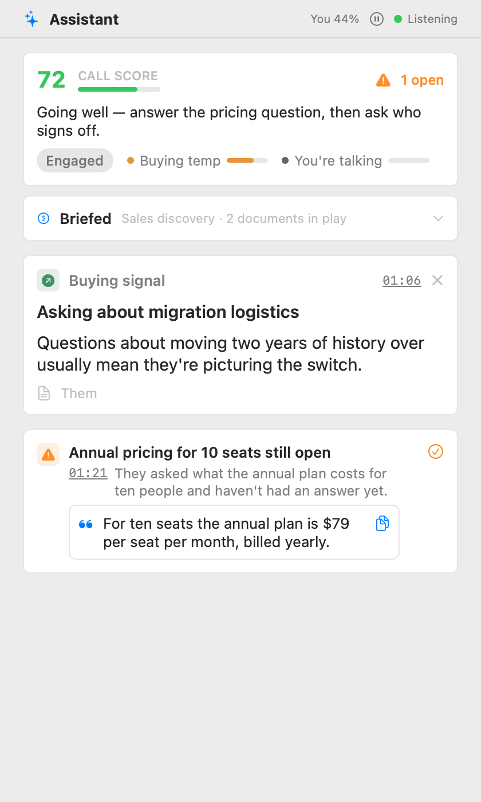

The panel keeps a running score of how the call is going, a one-line coach verdict, and cards as things happen: a suggested answer when the other side asks something, a blocker when a deal-breaker comes up, action items as they're agreed. Blockers stay pinned until you mark them handled. If a card was wrong or already dealt with, dismiss it and it's gone.
The "You 59%" number in the header is your share of the talking. If it creeps up too high, that's the app politely telling you to let the other person speak.
The first card in the panel tells you what the Assistant is working with: the profile, your brief, and the documents in play. It stays open until the first suggestion lands, then folds into one line you can click to reopen. Forgot the brief? "Add a brief" lets you type it mid-call, and the next suggestion uses it. The Knowledge link opens Settings so you can add or tag documents without leaving the call.
Next to the status badge there's a pause button. While paused, nothing is sent anywhere and nothing is spent: no requests, no tokens, no quota. Parrot keeps listening locally so when you press play again the Assistant catches up with what it missed. Your cards stay exactly where they were. Good for private stretches, casual chats, or saving your free-tier allowance for the meeting that matters.
Sometimes a short tip appears at the top of your screen, over the call: "They've gone quiet since you said 'the price goes up in January'." It fades after about ten seconds; click it to open Parrot at that moment. The same tip sits above the coach line in the Assistant panel until you close it.
At most one tip every two minutes, and none in the first two. Tips read timing and words only; nothing tries to read feelings from anyone's voice. The pill is left out of screen sharing, so the other side never sees it. Turn tips off in Settings → Assistant → Live Nudges.
Two settings in Settings → Assistant decide how much the Assistant spends, whether that's money or a free plan's rate limits: